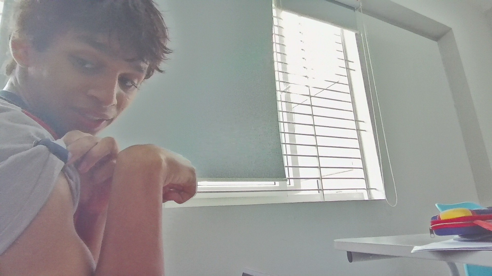
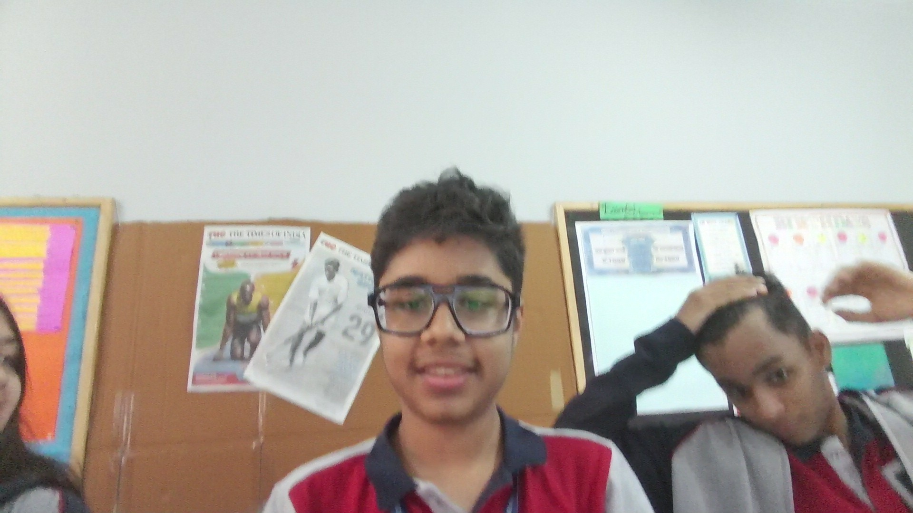
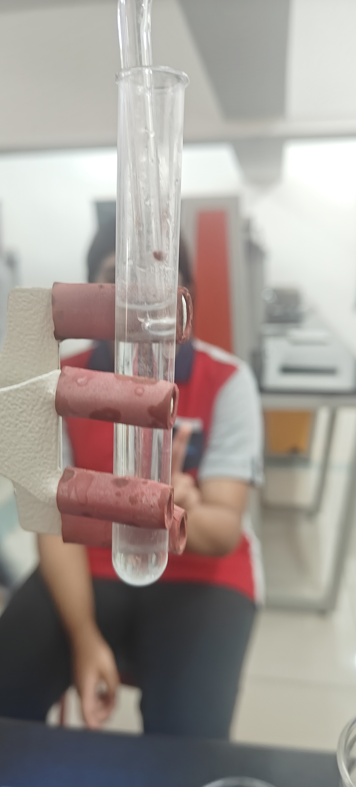

Threadbook

Between the
Threads
Hello Worlds! Just joking, welcome to my little corner where I share my interests, projects and things I enjoy!

My favorite Playlist on Spotify
I really enjoy learning new things. Reading books, playing basketball, coding, experimenting with AI and listening to some good music are some of my top hobbies.
I once thought coding was too difficult, but I now find it
creative, challenging, and fun.
I enjoy learning AI and learning how it can make everyday life better.
Web development is the process of creating websites and web apps, and it is something I am excited to keep learning.
My interests keep growing:
one day I might be coding a new feature,
the next day I could be reading, cooking, or playing basketball.
I like building projects that are useful, creative, and enjoyable for people to use.
ConnectCircle is a student wellbeing app where students can make connections with their peers log their mood, share them in circle chats, which are basically group chats, and can do much, much more.
SpiderOS is one of my first Web OS projects, I am building it as a fun way to explore web development and turn creative ideas into something people can use.